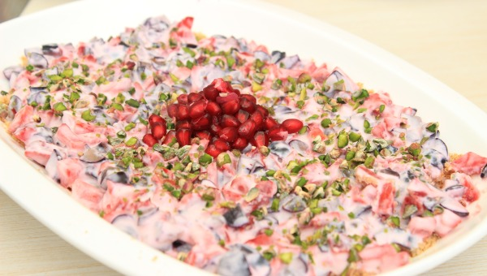

Yogurt Crunch Pudding Recipe

Description
To complete a lazy Sunday afternoon well spent, Seema Chandra lathers on a colorful yogurt pudding.
Ingredients of Yogurt Crunch prdding
- 400 gms hung yogurt
- 2 tbsp fresh rose water
- 1 tbsp organic honey
- 1/2 cup grapes, chopped
- 1/2 cup strawberries,chopped
- 1/2 cup pomegranate kernels
- 2 tbsp butter
- A pinch of ground cinnamon
- 2 tsp finely ground cane sugar
- Brandy (optional)
How to Make Yogurt Crunch Pudding
-
Put together the cane sugar, breadcrumbs and a pinch of cinnamon with
butter in bowl and rub between you fingers.
- Lay out the dry mixture in a flat dish as the base of the pudding.
- In a bowl mix the hung yogurt, honey, rose water,chopped strawberries,
chopped grapes and lather it on the base, topping it finally with creshed
pistachios and pomegranates,and allow to set in the fridge.
Home page